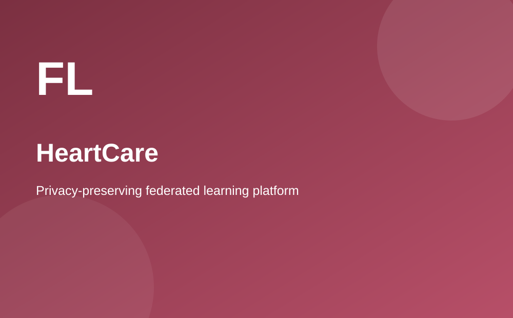
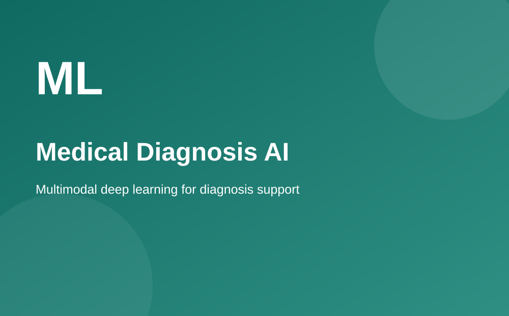

AI-Powered Cybersecurity Intrusion Detection System
This project focused on an ensemble machine-learning approach for detecting
network intrusions and malicious behavior patterns in network traffic data.
The work included model optimization and feature engineering to improve
detection performance and reduce false positives. A real-time monitoring
dashboard with alerting mechanisms was also part of the technical contribution.
Related Web Development Resource

Privacy-Preserving Federated Learning Platform: HeartCare
HeartCare is a federated learning project designed around collaborative model
training while maintaining data privacy across healthcare institutions.
The platform used the Flower framework and PyTorch and included secure API
endpoints with Flask for cardiovascular risk assessment. The project demonstrates
my interest in privacy, machine learning, and production-oriented software design.
Learn About Web and Technology Standards

Multimodal Deep Learning for Medical Diagnosis
This project explored a multimodal neural network that combines retinal images
and clinical information for diagnostic analysis related to diabetic retinopathy.
The technical approach included transfer learning and deep learning architectures.
The project represents my interest in computer vision, healthcare applications,
and research-oriented machine learning.
Visit Georgia State University